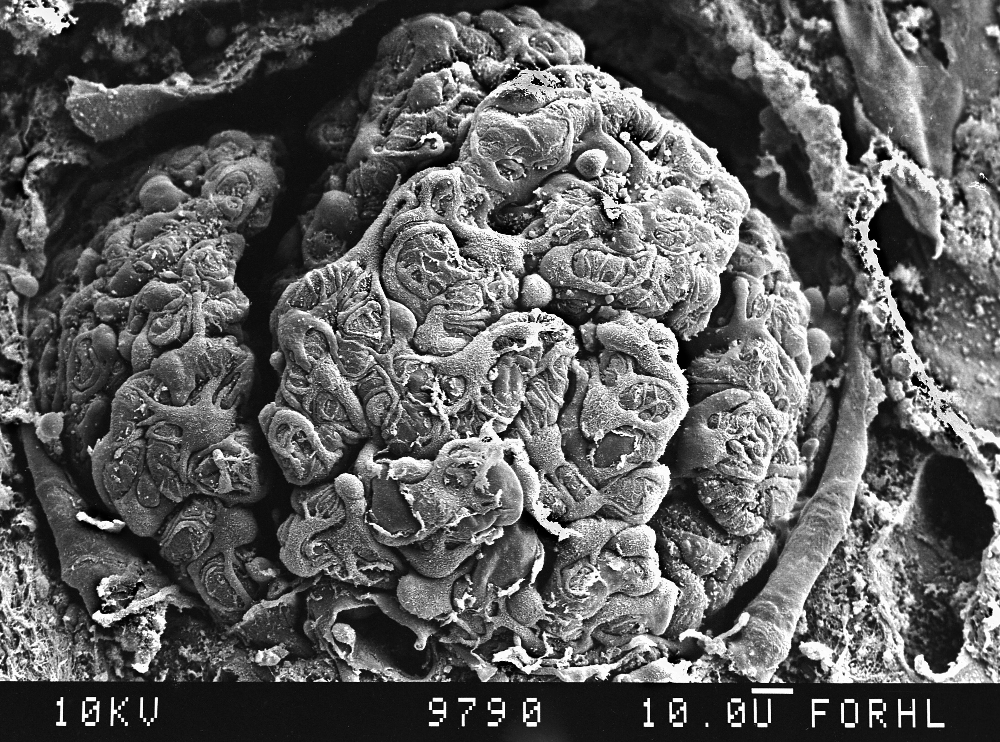
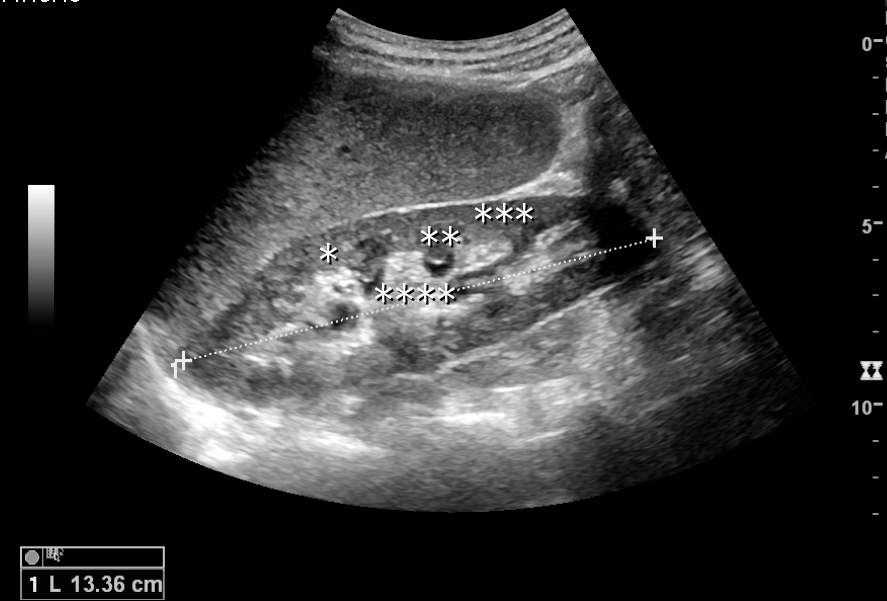
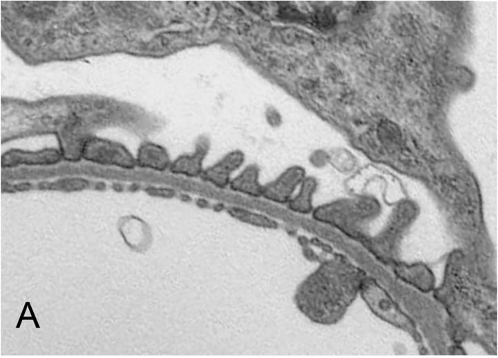

16. Kidney organization and glomerular filtration
A diagram sends 1,200 mL of blood into the kidneys each minute, marks 125 mL/min as filtered, and sends only 575 mL/min out through the vascular route. Where did the missing volume go? Calling the outgoing stream “unfiltered blood” does not repair the accounting. We must identify the fluid compartment, distinguish a capillary wall from a tubular wall, and follow both vascular and urinary routes. The same discipline explains why an obstructed ureter can reduce filtration even when arterial blood still reaches the kidney.
Lectures L36–37 supply the topic sequence. Original worked examples use explicitly selected values rather than patient measurements. The pressure and resistance calculations are limited thought experiments. Microscopy establishes prepared tissue appearance at its stated scale; it does not measure filtration trajectories. The source corrections and access limits are collected in §16.6.
16.1 Renal architecture: separating the routes L36 01:59
Excretion is part of homeostasis
Excretion removes metabolic products and substances present in excess from the internal environment. Egestion expels material remaining in the digestive tract; the terms describe different routes, although bile carries some excreted substances into that tract. Carbon dioxide generated by cellular metabolism leaves chiefly through the lungs. Sweat carries water and salts, with small amounts of nitrogenous substances, while also supporting heat loss. The liver processes nitrogen and bile pigments; the kidneys adjust water, electrolytes and acid excretion while removing many soluble wastes. These organs cooperate rather than competing to be the body's single “purifier.”
The interstitium is the tissue space outside vascular and tubular lumens, containing extracellular fluid and supporting tissue.
A substance can be indispensable at one concentration and harmful in excess. Sodium and water are examples; they are not simply toxins that a good filter should exclude completely. Renal homeostasis requires selective reabsorption, movement from tubular fluid back toward blood, and secretion, movement from the blood/interstitial side into tubular fluid. Reabsorbed material crosses the tubular epithelium into the interstitium before returning across a capillary wall to blood. Filtration begins the processing; final excretion is its result. The NIDDK kidney account distinguishes the filter from subsequent tubular recovery. Blood pH is regulated within a narrow, mildly alkaline range rather than toward chemical neutrality.
Nitrogenous wastes have different origins L36 06:36
Ammonia, NH₃, and its protonated form ammonium, NH₄⁺, belong to the handling of nitrogen from amino-acid and other metabolism. Excess systemic ammonia is particularly hazardous to the brain. The liver's urea cycle packages nitrogen into urea, which circulates and is excreted by the kidney. This conversion lowers the hazard of transporting nitrogen; it does not mean that ammonia poisoning normally generates uric acid as the next toxin. Renal ammonium production and excretion also participate in acid-base balance, a process developed in the following chapter. The owning MedlinePlus ammonia account describes the hepatic conversion and its failure.
Uric acid arises from purines, nitrogen-containing components of nucleotides. At physiological blood pH much is present as urate. Its solubility is limited and depends on chemical form, pH and the solution environment; “completely insoluble” is incorrect. Crystal formation in joints or urinary stones is a concentration/chemistry problem, not an inevitable fate of every urate molecule. See the NIH uric-acid explanation. Comparative strategies also require context: many aquatic animals release substantial ammonia to surrounding water, mammals predominantly excrete urea nitrogen, and birds/reptiles conserve water with uric-acid/urate-rich excreta. Those evolutionary comparisons do not prescribe a ranking of water intake for people.
Creatinine is formed from the creatine/phosphocreatine system associated with muscle energy buffering. Its blood concentration reflects generation as well as renal handling. High muscle mass, low muscle mass, diet and nonsteady conditions can therefore complicate interpretation. A creatinine result is not a direct count of living nephrons, and ordinary renal injury is not explained by routine creatinine crystallization. Blood urea nitrogen (BUN) measures nitrogen contained in circulating urea; adding it does not by itself confirm kidney failure. Current NIDDK guidance identifies estimated filtration and urine albumin as complementary markers and notes creatinine-estimation limits. This chapter does not calculate a patient's estimated GFR.
The dominant route for bilirubin is hepatobiliary. Unconjugated bilirubin is strongly albumin bound; conjugated bilirubin is more water soluble and can appear in urine in appropriate disease states. Thus a general renal-waste list should not imply that all circulating bilirubin is freely filtered; the NIH bilirubin-urine account distinguishes the abnormal urinary finding. Likewise, the lecture's adult-body-water percentage is not adopted: body composition changes with age and adiposity, and water is not nine tenths of a typical adult's mass; the National Academies water reference explains body-composition variation. Neither an unspecified composition percentage nor a sex-specific creatinine-production range is needed for the accounting that follows.
Organ, tissue regions and drainage L36 12:43
The paired, bean-shaped kidneys lie behind the peritoneal cavity, with the right usually somewhat lower because of the liver above it. An adult kidney is roughly fist-sized; the lecture's length of about 10–12 cm is an approximate anatomical example rather than an individual's diagnostic range. A fibrous renal capsule covers the organ. The medial hilum admits or transmits vessels, nerves and the renal pelvis/ureter. The renal sinus is the internal space containing the collecting pelvis/calyces, vessels and fat; it is not a third parenchymal layer alongside cortex and medulla. The gross anatomical reference supplies this orientation.
Parenchyma means the organ's functional tissue. The outer cortex contains renal corpuscles and convoluted tubules; cortical columns extend between medullary pyramids. The inner medulla contains organized tubular and vascular pathways. Each medullary pyramid ends at a papilla, whose papillary ducts, also called ducts of Bellini, empty into a minor calyx. Minor calyces join major calyces, which drain to the renal pelvis, then the ureter. A ureter connects a kidney to the bladder; the urethra carries urine from the bladder out of the body. These structures are not renal veins. Pyramid, calyx and nephron counts vary; the relationships matter more here than reconciling several unsupported fixed counts.


A nephron connects a filter to a processing tubule L37 01:14
A nephron is a multicellular functional unit, not one kidney cell. It comprises a renal corpuscle and a renal tubule. The corpuscle contains a tuft of capillaries, the glomerulus, and Bowman's capsule, which receives filtrate in its capsular space. The proximal convoluted tubule leads to the loop of Henle and then the distal tubule; collecting tubules/ducts receive fluid from multiple nephrons and perform further processing. They are continuous with nephron tubules but commonly classified as a separate collecting system. Figure 16.1 exposes the convoluted surface of a glomerular tuft; its complete vascular/tubular connections require the separate reconstruction in Figure 16.2.
All renal corpuscles are cortical, including those of juxtamedullary nephrons situated near the cortex–medulla boundary. Their long loops extend deep into medulla; more superficial cortical nephrons generally have shorter loops. “Juxtamedullary” locates the corpuscle near the medulla rather than inside it. A kidney contains on the order of a million nephrons, with substantial interindividual variation; the source's different narrow count ranges and exact cortical percentage are not used as constants. The microscopic anatomical account distinguishes corpuscle, tubule and collecting duct.
The vascular route is renal artery→progressively smaller arteries→afferent arteriole→glomerular capillaries→efferent arteriole→peritubular capillaries or, for the deep circulation, vasa recta→venous drainage→renal vein. “Afferent” and “efferent” mean toward and away from this glomerulus. Peritubular capillaries surround tubules; vasa recta accompany the medullary arrangement. Blood remains inside a continuous vascular lumen. Only fluid and permitted solutes crossing the filtration barrier reach capsular space. The tubular route begins there and continues through tubules and collecting ducts to the urinary drainage route just described. Reabsorption reconnects these routes by exchange across epithelia and interstitium, not by joining a ureter to a vein.
Open renal anatomy gallery with Native/Fit access and complete source figure

Ultrasound key: *column of Bertin; **medullary pyramid; ***cortex; ****sinus. Source-captioned normal adult kidney; specific patient/body side and screen-to-body axes not inferred. Hansen, Nielsen & Ewertsen (2016), DOI10.3390/diagnostics6010002, Figure1, CC BY4.0. Exact native PDF 887×601 image, unchanged ; 110 mm print≈205ppi.

Mouse source key: PT/red proximal tubule; TL/blue thin limb; TAL/green thick ascending; DCT/yellow distal convoluted; CNT/white connecting; CD/orange collecting duct. SN/MN/JN are superficial/middle/juxtamedullary examples. Source 30 µm bar applies to 2D optical fields, not enlarged traces. Exact source panel c crop715×360 ; 130 mm print≈140ppi.
Filtering is only one kidney function L36 18:42
The kidney regulates extracellular volume, osmolality, electrolyte composition and acid-base balance by varying what is excreted. Osmolality counts dissolved particles per mass of water; it differs from a single ion concentration. A filtered substance can subsequently be reclaimed or secreted, so changes in filtration alone cannot specify its final excretion. Loss of some nephrons also does not imply immediate total loss of renal function. Surviving units have reserve and can adapt; some acute injuries recover, while permanent nephron destruction is a different event. Dialysis and transplantation are renal replacement approaches in appropriate severe disease, not inevitable responses to every injury. See NIDDK's kidney-failure overview.
Erythropoietin (EPO) stimulates erythroid development in marrow. Renal oxygen-sensitive signaling links its production to tissue oxygen availability; the kidney does not directly count worn-out erythrocytes. The NIDDK anemia account explains the consequences of reduced renal EPO production. Renin is a proteolytic enzyme released chiefly by granular juxtaglomerular cells; it initiates a signaling cascade rather than secreting “renin-angiotensin” as one molecule. Its cellular control returns in §16.2.
For vitamin D, a liver hydroxylation yields 25-hydroxyvitamin D, and a second hydroxylation occurring mainly in kidney produces active calcitriol, 1,25-dihydroxyvitamin D. The active product is not converted back into generic vitamin D as an activation step. See the owning NIH Office of Dietary Supplements account. The source slide's thrombopoietin claim also requires correction: thrombopoietin supports platelet/megakaryocyte biology, with liver as the principal systemic source. The tissue-specific knockout study provides experimental mouse evidence for the liver's primary contribution; it does not mean that every tissue has zero local expression.
The filtration barrier is an integrated capillary wall L37 04:45
From capillary lumen toward capsular space, the barrier comprises fenestrated endothelium and its surface layer, the glomerular basement membrane (GBM), and podocyte foot processes with intervening slit diaphragms. Fenestrations are windows in the endothelial cell; the glycocalyx is its carbohydrate-rich surface layer. Podocytes are the specialized epithelial cells forming the visceral capsule layer. A podocyte has branching processes and smaller foot processes; it is not itself synonymous with one foot process. The parietal capsule layer forms the outer wall around the urinary space. Filtrate crosses between adjacent foot processes through a slit diaphragm, a specialized junctional structure containing nephrin and associated proteins. It does not pass through the body of an erythrocyte or through a rigid sieve made solely from nephrin.
The endothelial surface layer is sensitive to preparation: an original rat electron-microscopy study used several labeling/fixation methods and found differing surface-layer appearances, including material in fenestral openings. The selected conventional TEM in Figure 16.3 does not individually resolve or label glycocalyx or slit diaphragms; neither layer thickness nor molecular selectivity is measured from that field. The GBM contains extracellular-matrix networks including type IV collagen and laminin. Conventional electron-microscopic descriptions name a central lamina densa, with lamina rara interna toward endothelium and lamina rara externa toward podocytes. These names describe observed contrast in prepared material; they do not establish three independently adjustable mesh filters in a living nephron. The histology reference supplies layer orientation, while human immunoelectron microscopy independently localizes nephrin at the slit area. Nanometer widths reported for endothelial fenestrations and filtration slits refer to different structures and measurement methods. The lecture's 50–100 nm windows, 25–30 nm slit width and separate molecular threshold should not be collapsed into a universal “everything below 10 nm passes” rule.
Healthy filtration strongly restricts blood cells and large plasma proteins while allowing water and many small solutes. Size, shape, charge, binding and the integrated state of the wall matter. The statement that all proteins are negative and the GBM alone repels them is inadequate. In Goldberg and colleagues' mouse experiment, removal of agrin and perlecan-associated heparan sulfate markedly reduced GBM anionic sites without the predicted protein leak. This is a counterexample to a simple GBM-charge explanation, not proof that charge is irrelevant everywhere or that human disease follows the same perturbation.
Glucose, many ions and urea can enter filtrate; this does not commit them all to final urine. The unbound fraction of a small substance may filter differently from its carrier-bound fraction. Most circulating lipids are associated with lipoproteins or albumin, so “lipids freely filter” is misleading. Hemoglobin packaged in intact erythrocytes remains vascular; cell-free hemoglobin after hemolysis raises a different handling problem. Protein filtration also is not exactly zero: downstream tubular retrieval influences urinary protein. A normal tubular protein such as uromodulin therefore does not demonstrate a leaking glomerular wall.
Intraglomerular mesangial cells and matrix support the capillary tuft and participate in matrix maintenance, signaling, contractility and clearance of material in their local domain. Extraglomerular mesangial, or lacis, cells occupy a different location near the vascular pole. Neither label licenses a cartoon in which mobile cells patrol the outer slit diaphragms and chop off each trapped protein. That specific cleaning narrative is not adopted. Structural support, local phagocytic capacity, renin secretion and macula-densa sensing must remain separate functions rather than being assigned to one interchangeable “mesangial” cell.
16.2 Filtration forces: choosing a direction before choosing signs L37 17:44
Glomerular filtration rate (GFR) is the volume of ultrafiltrate generated in capsular spaces per unit time. Unless explicitly discussing one nephron or one kidney, rates here refer to both kidneys together. Ultrafiltrate is fluid derived from plasma by passage across the wall, with much lower large-protein content. It is not whole blood and is not yet final urine. The volume-conservation problem in the opening case depends on identifying this third stream.
Choose positive filtration from glomerular capillary lumen toward capsular space. Let \(P_{gc}\) and \(P_{bs}\) be hydrostatic pressures in those two compartments, in millimeters of mercury (mmHg). Their difference pushes fluid outward if capillary pressure is larger. Let \(\pi_{gc}\) and \(\pi_{bs}\) be the corresponding colloid osmotic, or oncotic, pressures associated with retained macromolecules. A higher plasma oncotic pressure favors water retention on the vascular side and therefore opposes the chosen positive direction. A higher capsular oncotic pressure has the opposite sign. The net driving pressure is
\[\Delta P_{\mathrm{net}}=(P_{gc}-P_{bs})-(\pi_{gc}-\pi_{bs}).\tag{16.1}\]Each term is a pressure in the same unit. Calling \(P_{bs}\) “colloidal hydrostatic pressure” merges two distinct effects; it is hydrostatic back pressure. Calling either side “outside the kidney” obscures the local geometry because both compartments are inside the organ. The hydrostatic pressure of capsular fluid opposes outward filtration by pushing on the barrier; it need not be imagined as suction.
This simplified relation assumes that the specified protein oncotic difference is fully effective across the barrier, equivalent to a protein reflection coefficient of one. A reflection coefficient measures how effectively a barrier sustains an osmotic effect for the selected solute; a leaking barrier may require a different coefficient and a more detailed transport model. For an ideal low-protein ultrafiltrate set \(\pi_{bs}\approx0\), another assumption rather than an identity. Choose the lecture's illustrative \(P_{gc}=55\), \(P_{bs}=15\) and \(\pi_{gc}=30\) mmHg. Equation (16.1) then gives \(55-15-30=10\) mmHg outward. The numerical pressure is not “10 Hz”; hertz measures frequency. The calculation establishes a sign and magnitude under chosen conditions, not a universal pressure for all nephrons.
To convert a driving pressure to a volumetric filtration rate, introduce a filtration coefficient \(K_f\), in mL min⁻¹ mmHg⁻¹. In a uniform, linear hydraulic approximation it combines available filtering area and hydraulic permeability. For outward filtration within the approximation's applicable regime,
\[\mathrm{GFR}=K_f\Delta P_{\mathrm{net}}.\tag{16.2}\]The units multiply to mL/min. One can motivate the coefficient by taking small surface patches, each with local permeability multiplied by area and pressure difference, then summing their flows. Replacing those local pressures by one effective value yields (16.2). This replacement suppresses spatial variation, including the rise in plasma protein concentration along a filtering capillary. The GFR physiology account gives the pressure relation and distinguishes plasma from whole-blood flow; access limits are recorded in §16.6.
For an original arithmetic example select \(K_f=12.5\) mL min⁻¹ mmHg⁻¹. At 10 mmHg the model gives 125 mL/min. This coefficient is chosen to make the two examples consistent; it is not estimated from a patient's measurements. If only capsular pressure rises to 20 mmHg, net pressure becomes 5 mmHg and modeled flow becomes 62.5 mL/min. The sensitivity is \(\partial\mathrm{GFR}/\partial P_{bs}=-K_f\) under the fixed-coefficient, fixed-other-pressure assumptions. The minus sign follows directly from the compartment convention. If the chosen pressures produce zero or negative net pressure, the algebra yields zero or negative signed water flux; it must not be silently relabeled a negative measured GFR. That regime calls for revisiting the filtration model and boundary conditions.
Open the observed wall and controllable pressure lesson in a full tab · Complete native source Figure 7

Read the prepared wall: lower bright field = capillary-lumen side; dense curved band = GBM; outer profiles = podocyte foot processes; upper cleft = urinary-space side/local subpodocyte profile, not a proven connected capsular lumen. No individual glycocalyx or slit-diaphragm label is assigned.
| Selected state | Pgc | Pbs | πgc / πbs | Net mmHg | Model mL/min |
|---|---|---|---|---|---|
| Baseline | 55 | 15 | 30 / 0 | 10 | 125 |
| Higher capsular pressure | 55 | 20 | 30 / 0 | 5 | 62.5 |
- Identify the two observed wall sides without changing the tissue image.
- Hold capillary/oncotic pressures and Kf fixed; increase Pbs from 15 to 20 mmHg.
- Calculate NFP = 55 − Pbs − 30 + 0 and multiply by Kf = 12.5 mL/min/mmHg.
Resistance separates perfusion from filtration L37 22:59
Perfusion is blood flow through tissue. Arteriolar tone changes perfusion and capillary pressure together, but GFR is not generally proportional to either renal blood flow or systemic arterial pressure. Autoregulation includes vascular responses to pressure and tubular feedback; these can buffer filtration against changes in input. Afferent constriction tends to reduce capillary pressure and renal flow, reducing filtration under otherwise comparable conditions. Moderate efferent constriction can raise upstream glomerular pressure while reducing flow. With sufficiently strong constriction, reduced plasma supply and increased capillary oncotic opposition can limit or reduce GFR. The vessel identity, degree of constriction and other responses therefore matter.
A simple hydraulic derivation clarifies why flow and local pressure need not change in the same direction. It is an original analogy, separate from the filtration calculation. Put positive resistances \(R_a\) upstream and \(R_e\) downstream of one node. Fix inlet pressure \(P_a\) and outlet pressure \(P_v\), both in mmHg, with \(P_a>P_v\). Let \(Q\) be the common flow through these two resistors, in arbitrary volume/time units chosen consistently with resistance. No fluid leaves at the node. The pressure drops are \(QR_a\) and \(QR_e\), so adding them and then recovering node pressure \(P_n\) gives
\[P_a-P_v=Q(R_a+R_e),\qquad Q=\frac{P_a-P_v}{R_a+R_e},\qquad P_n=P_v+QR_e.\tag{16.3}\]With selected \(P_a=100\), \(P_v=10\), and \(R_a=R_e=1\), flow is 45 arbitrary units and node pressure is 55 mmHg. Doubling upstream resistance gives flow 30 and node pressure 40; doubling downstream resistance gives the same flow 30 but node pressure 70. The changed partition of the pressure drop explains the opposite node-pressure responses. Figure 16.4 displays these quantities separately. This is not a fitted glomerulus: it deliberately has no filtration branch, protein concentration, oncotic evolution, compliance, autoregulation or hormonal feedback. Substituting its node pressure into (16.2) would create an unjustified combined nephron model.
Static counterpart: initial two-resistor flow 45 and node pressure 55. Double upstream resistance: flow 30, pressure 40. Double downstream resistance: flow 30, pressure 70. All flow units are arbitrary; pressures are selected mmHg.
Local sensing and renin secretion are different jobs L37 25:54
The juxtaglomerular apparatus (JGA) lies at the vascular pole where the late thick ascending limb/early distal tubular region approaches its own glomerulus. The macula densa is a specialized epithelial plaque sensing luminal NaCl transport/delivery, not a sensor sampling plasma directly. Granular juxtaglomerular cells, modified vascular smooth-muscle cells especially in the afferent wall, store and release renin. Extraglomerular mesangial/lacis cells occupy the neighboring triangular region. The apparatus is not a structure buried inside the GBM, and lacis cells should not be renamed renin-storing granular cells.
Tubuloglomerular feedback links distal tubular salt delivery to afferent vascular tone. Increased macula-densa salt delivery can promote local signals that increase afferent resistance; low salt delivery can promote renin release through paracrine pathways, in which locally released signals act on nearby cells. In a direct isolated rabbit macula-densa experiment, lowering luminal NaCl stimulated basolateral prostaglandin E₂ release, detected with an engineered cellular biosensor. This identifies a particular source and signal under experimental conditions; it does not justify attributing all renal prostaglandins to lacis cells. Nor does it make every prostaglandin a generic inflammatory or vasoconstrictor hormone.
Released renin cleaves circulating angiotensinogen to angiotensin I. Angiotensin-converting enzyme generates angiotensin II, which affects vascular tone and stimulates adrenal aldosterone signaling. This is the renin–angiotensin–aldosterone system (RAAS). Vascular pressure, sympathetic input and macula-densa signaling contribute to its control; activation can support perfusion in some circumstances while chronic inappropriate activation can be harmful. It is not an automatic guarantee of normal blood pressure. The exact amino-acid count depends on precursor/processed form and is not needed here. The source's unqualified count is omitted rather than substituting another unsourced number.
The source's mediator list includes atrial and B-type natriuretic peptides (ANP/BNP), dopamine, nitric oxide (NO), prostaglandins, angiotensin II, endothelin, noradrenaline, platelet-activating factor and platelet-derived growth factor. These span endocrine, neural, paracrine and growth-factor signaling. Cyclic AMP (cAMP) is an intracellular messenger, not a circulating hormone equivalent to ANP. Receptor, dose, vascular segment, starting tone and species alter responses; a list of names is insufficient for a universal GFR-up/GFR-down table. For example, an original human ANP administration study measured renal/hemodynamic responses under a specified intervention, while the rabbit experiment above isolates a local PGE₂ signal. Neither proves that all listed vasodilators must increase GFR in every person.
The native slide places PGE₂ among vasodilators and PGF₂ among constrictor examples, whereas the caption incorrectly places PGE₂ under constrictors. This discrepancy is recorded without turning the slide into a drug-response rule. The less developed platelet-activating-factor and growth-factor examples remain a survey of possible regulation, with no assigned quantitative or universal direction here. Equations (16.1)–(16.3) cannot infer clinical drug effects from a mediator name.
Protein leakage changes several variables at once L37 28:55
Proteinuria is increased protein in urine; albuminuria specifically concerns albumin. Glomerular barrier disease can increase protein passage, but tubular recovery and protein production also affect final urine composition. Persistent foam is not a protein assay, and isolated appearance cannot establish a kidney diagnosis. The owning NIDDK testing account explains why quantitative blood and urine measurements are used.
In equation (16.1), a decrease in plasma oncotic pressure or increase in capsular oncotic pressure would increase outward driving pressure if every other term remained fixed. A real damaged glomerulus need not hold those other terms fixed: filtering area, hydraulic permeability, capillary pressure and flow may all change. Protein leakage therefore does not guarantee increased GFR. It also does not establish reduced reabsorption of every solute. Edema associated with substantial protein loss involves whole-body fluid distribution, low plasma albumin and renal sodium/water retention; it cannot be deduced from the glomerular pressure equation alone. NIDDK's nephrotic-syndrome account supplies the clinical context without making the teaching model diagnostic.
16.3 Blood, plasma, filtrate and urine are four different rates L37 16:18
Let renal blood flow (RBF) denote the volume of whole blood entering both kidneys per minute, and renal plasma flow (RPF) its plasma component. Hematocrit, \(H\), is the fraction of whole-blood volume occupied by red cells; this teaching split neglects the much smaller other cellular components and treats \(H\) as the relevant flowing volume fraction. Partitioning the incoming volume gives
\[\mathrm{RPF}=\mathrm{RBF}(1-H),\qquad Q_{\mathrm{cell}}=\mathrm{RBF}H,\qquad \mathrm{RBF}=\mathrm{RPF}+Q_{\mathrm{cell}}.\tag{16.4}\]Here \(Q_{\mathrm{cell}}\) is the retained cellular-volume rate in mL/min. It is part of the blood traversing the glomerular vascular route, not a separate stream that avoids the kidney. Define filtration fraction \(\mathrm{FF}=\mathrm{GFR}/\mathrm{RPF}\), a dimensionless fraction. The denominator is plasma flow because intact cells do not normally cross the filtration wall. Dividing by whole-blood flow answers a different question. These distinctions correct both the slide's 1,200 mL plasma/min label and the caption's invented bypass stream.
Retain the source's numbers solely as a consistent illustrative construction: RBF=1,200 mL/min, RPF=625 mL/min and GFR=125 mL/min. Solving (16.4) gives \(H=1-625/1200=0.479167\), approximately, and \(Q_{\mathrm{cell}}=575\) mL/min. The filtration fraction is \(125/625=0.20\). Assuming steady flow at the glomerulus and no additional loss there, efferent plasma flow is \(625-125=500\) mL/min. Efferent blood flow is therefore \(500+575=1,075\) mL/min. The conservation check is \(1,200=1,075+125\). Figure 16.2 identifies where the filtered branch leaves the vascular route.
| Stream | Volume rate (mL/min) | Compartment |
|---|---|---|
| Incoming whole blood | 1,200 | Vascular lumen |
| Incoming plasma component | 625 | Within incoming blood |
| Retained cellular component | 575 | Vascular throughout this model |
| New ultrafiltrate | 125 | Crosses into capsular space |
| Efferent plasma | 500 | Vascular lumen |
| Total efferent blood | 1,075 | 500 plasma + 575 cells |
Thus 575 cannot represent the entire efferent vascular stream. The native pressure diagram's 1,200 incoming/575 outgoing/125 filtered labels lose 500 mL/min if read as whole-blood flows. That is a slide-level accounting defect as well as a caption explanation defect. The repair changes the compartment labels and full outgoing sum; it does not merely rename blood as plasma.
Subsequent reabsorption returns fluid from tubules to peritubular blood, so glomerular efferent flow is not the final renal-vein flow. For a simple whole-kidney steady water balance with negligible other water sources/losses, net renal vascular volume loss matches final urinary volume. A large filtrate production can coexist with a small urine output because most filtered water returns to circulation. At 125 mL/min, the arithmetic daily filtrate is \(125\times60\times24/1000=180\) L/day. If an original water-only example reabsorbs 124 mL/min, urine flow is 1 mL/min, or 1.44 L/day: 99.2% of the filtered water returns. These numbers illustrate repeated processing, not storage of 180 liters in the kidneys.
Even capsular volume is a different quantity. Let \(V_{bs}(t)\) be fluid volume in a simplified capsular compartment, in mL, with time \(t\) in minutes, and let \(Q_{\mathrm{out}}\) be its tubular outflow in mL/min. Then conservation gives \(dV_{bs}/dt=\mathrm{GFR}-Q_{\mathrm{out}}\). Steady volume requires matching inflow and outflow; a GFR of 125 mL/min does not imply capsular volume grows by that amount indefinitely. An obstructed downstream tract changes this balance, pressures and eventually filtration; it cannot be represented by prescribing unchanged GFR forever.
Clearance asks about a solute rather than a water stream
For a solute \(x\), let \(P_x\) be its plasma concentration and \(U_x\) its urine concentration, both expressed in mg/dL here. Let \(\dot V_u\) be urine flow in mL/min, and require \(P_x>0\); clearance is undefined at zero plasma concentration. Excretion rate is urine concentration times urine flow; divide it by plasma concentration to define the renal clearance \(C_x\), the virtual volume of plasma cleared of that solute per minute:
\[C_x=\frac{U_x\dot V_u}{P_x}.\tag{16.5}\]The concentration units cancel, leaving mL/min. The word “virtual” matters: no physical stream of completely solute-free plasma need exist. Identifying this clearance with GFR requires a matched, approximately steady collection: plasma concentration, filtration and excretion must vary little over the interval, net marker storage in the tubular/urinary route must be negligible, and urinary transit/collection delay must be negligible relative to the timescale of change or otherwise accounted for. Urine collected now can reflect plasma filtered earlier.
To expose the storage assumption, let \(M_x(t)\) be marker mass in the tubular and urinary route up to the collection point, in mg, with time \(t\) in minutes. For this balance only, write \(p_x=P_x/100\) and \(u_x=U_x/100\) for concentrations converted from mg/dL to mg/mL. For a freely filtered marker with no tubular secretion, reabsorption, renal production or degradation, mass conservation gives
\[\frac{dM_x}{dt}=p_x\mathrm{GFR}-u_x\dot V_u,\qquad C_x=\mathrm{GFR}-\frac{1}{p_x}\frac{dM_x}{dt},\quad p_x>0.\tag{16.6}\]Both terms in the mass balance have units mg/min; dividing a storage rate by concentration gives mL/min. Under the collection assumptions above, net storage is approximately zero and clearance approximates the corresponding GFR; in the exact steady limit they are equal. During a rapid change, an ideal marker can accumulate or leave a pre-existing urinary inventory, so its measured clearance need not equal instantaneous GFR even without tubular handling. Increasing inventory makes excretion smaller than current filtered input; release can produce the reverse discrepancy. If the marker is only partially filterable or is handled by tubules, equality also need not follow. Creatinine's tubular secretion and variable generation are additional reasons to distinguish measured creatinine concentration, creatinine clearance and estimated GFR. The NIH creatinine-test account describes the measurements and their context.
For a synthetic ideal marker in a matched approximately steady collection with negligible net storage and accounted-for urinary delay, select urine concentration 100 mg/dL, urine flow 1.25 mL/min and plasma concentration 1 mg/dL. Equation (16.5) then gives 125 mL/min. To check mass units explicitly, 1 mg/dL is 0.01 mg/mL; filtered load at GFR 125 is 1.25 mg/min. Urine concentration 100 mg/dL is 1 mg/mL; multiplying by urine flow gives the same 1.25 mg/min. The agreement follows from the marker assumptions, not merely from obtaining a plausible numerical GFR.
16.4 Reproducible calculations and model boundaries
The standard-library Python lab computes all numerical constructions above, checks volume conservation and compatible input domains, and sweeps capsular pressure at fixed coefficient. Run python -X utf8 code/ch16_renal_bookkeeping.py. It prints JSON and creates no files. The two-resistor check reproduces the opposite node-pressure changes at identical reduced flows. Invalid hematocrit, nonfinite inputs, nonpositive resistance, inlet pressure not exceeding outlet pressure, or filtration exceeding incoming plasma is rejected. The pressure function returns signed algebraic flux and deliberately does not disguise negative output as a physiological GFR.
RPF = 625.0 mL/min; cells = 575.0 mL/min; FF = 0.2
Efferent plasma = 500.0 mL/min; efferent blood = 1075 mL/min
Pbs sweep 15, 20, 25 mmHg → net pressure 10, 5, 0 mmHg
Selected Kf 12.5 → model filtration 125.0, 62.5, 0.0 mL/min
Two-resistor baseline: Q = 45.0 arbitrary; node pressure = 55.0 mmHg
Upstream doubled: Q = 30.0; node pressure = 40.0 mmHg
Downstream doubled: Q = 30.0; node pressure = 70.0 mmHgThe controlled panels use the same specified algebra in JavaScript; deterministic state is a function of a normalized presentation phase. Routes use phase as explanatory order; pressure and resistance panels use it as a selected parameter sweep. None uses a measured biological clock. They start paused, allow keyboard-operated seeking, replay and speed control, and retain text/static print counterparts. The numerical agreement checks implementation of bookkeeping; it does not validate anatomy, barrier biology, autoregulation or a disease model. Missing physiological processes include axial protein concentration, realistic parallel branching, filtration-dependent resistance, capillary compliance, tubular transport, feedback delays and injury-induced changes of permeability or surface area.
16.5 Six worked problems
Exercise 16.1 — Find the missing vascular volume
Use incoming whole-blood flow 1,200 mL/min, plasma flow 625 mL/min and filtrate production 125 mL/min. Recover hematocrit, filtration fraction, efferent plasma and efferent whole-blood flow. Explain why a 575 mL/min outgoing label fails.
Worked solution
From plasma=whole blood×(1−hematocrit), \(H=1-625/1200=0.479167\) approximately. The cellular-volume component is 575 mL/min. Divide filtration by plasma supply to obtain FF=125/625=0.20. Remove 125 from plasma, leaving 500 mL/min efferent plasma; add retained cells to obtain 1,075 mL/min total efferent blood. The 575 label counts cells only. Treating it as all vascular outflow drops the remaining 500 mL/min plasma. The corrected outgoing streams sum to 1,075+125=1,200; no blood-cell bypass is required.
Exercise 16.2 — What excludes erythrocytes and plasma proteins?
Answer the two closing barrier questions from L37. Why is “the GBM alone retains everything important” inadequate? Include the relation between podocytes and their foot processes.
Worked solution
A blood cell cannot normally traverse the intact endothelial surface/fenestrated wall, GBM and podocyte slit system; its retention is a property of the integrated capillary barrier. Endothelial windows are not open conduits for whole cells. Large-protein restriction additionally depends on molecular dimensions, binding and the organization of all barrier components. Podocytes are whole epithelial cells; their foot processes interdigitate, with slit diaphragms between adjacent processes. The GBM provides matrix support and contributes to filtration selectivity but does not by itself explain all protein behavior. Human immunoelectron-microscopy localization of nephrin places a specific protein at the slit area; it does not supply a universal particle-size cutoff. Essential glucose and ions can filter and later be reclaimed, while some normal urinary protein is secreted by tubules. “Important” is therefore not a physical filter criterion.
Exercise 16.3 — A tumor obstructs the right ureter
The source slide asks how right-sided obstruction changes capsular hydrostatic pressure and net filtration pressure, and what happens on the left. For the immediate isolated thought experiment hold other pressures and Kf fixed. Suppose right capsular pressure rises from 15 to 20 mmHg while Pgc=55, plasma oncotic pressure=30 and capsular oncotic pressure=0 mmHg. Assign each kidney half the earlier bilateral coefficient, 6.25 mL min⁻¹ mmHg⁻¹, solely for this symmetric starting example. What follows, and what does not?
Worked solution
A downstream obstruction can transmit increased hydrostatic back pressure toward the tubule and capsular compartment. The prescribed right-sided pressure rise reduces net pressure from 55−15−30=10 to 55−20−30=5 mmHg. At the selected one-kidney coefficient 6.25, right filtration falls from 62.5 to 31.25 mL/min. Left filtration remains 62.5 in this instantaneous independent-compartment model, giving a bilateral sum of 93.75 mL/min. The symmetric initial allocation is a teaching assumption, not a normal right/left measurement or a patient prediction.
The left ureter is not mechanically occluded by the stated right lesion; its capsular pressure need not rise by the same route. Over biological time, systemic responses, reserve, compensatory filtration and the underlying disease can change left-kidney behavior, so “the left remains exactly unchanged forever” is unjustified. This problem neither identifies a tumor nor predicts progression. The NHS hydronephrosis account supports the clinical significance of obstructed drainage; the calculation supplies only a bounded pressure consequence.
Exercise 16.4 — Derive clearance and break its interpretation
An ideal marker has plasma concentration 1 mg/dL, urine concentration 100 mg/dL and urine flow 1.25 mL/min. Assume a matched approximately steady collection, negligible net marker storage and urinary delay that is negligible relative to variation or otherwise accounted for. Derive its clearance. Would the same measured clearance equal GFR if the tubule secreted additional marker? Why can an ideal marker also fail to report instantaneous GFR during a rapid change?
Worked solution
Urinary mass/time is concentration×urine volume/time. Dividing by plasma concentration gives virtual cleared plasma volume/time, hence \(C_x=100\times1.25/1=125\) mL/min. The explicit mass rates are 1.25 mg/min excreted and, at GFR 125, 1.25 mg/min filtered. Division is valid because plasma concentration is positive. Equality with GFR uses free filtration, absent tubular handling and the stated collection/storage/delay assumptions. During a rapid change, urine at the collection point may represent earlier filtration; equation (16.6) allows nonzero marker accumulation or release, so even an ideal marker's clearance need not equal current instantaneous GFR. With added secretion, excreted mass can exceed filtered mass, so clearance exceeds GFR under otherwise matched conditions. A clearance value alone cannot recover the mechanism without knowing marker handling. Changing urine flow alone while holding urine concentration fixed also changes excretion; one must not assume a compensating concentration change without data or a model.
Exercise 16.5 — Why can reduced flow accompany increased node pressure?
Use equation (16.3) with pressures 100 and 10 mmHg and baseline resistances 1 and 1. Double either resistance. Does this calculate the sign of GFR under severe efferent constriction?
Worked solution
The initial total resistance is 2, so Q=90/2=45 and Pn=10+45=55. Doubling upstream resistance gives total 3, Q=30 and Pn=10+30=40. Doubling downstream resistance also gives Q=30, but its downstream drop is now 30×2=60 and Pn=70. Thus the same reduced perfusion-like flow can coexist with opposite local pressure changes. This construction does not calculate severe-constriction GFR. It has no filtrate side branch or increasing plasma oncotic pressure, and importing its pressure into another formula would not repair those omissions. The appropriate conclusion is decoupling of flow and node pressure in a specified circuit.
Exercise 16.6 — Explain uromodulin without calling a protein a gene
Answer L36's closing uromodulin question. Where is it produced, what evidence supports a urinary-defense role, and why does normal urinary protein not necessarily mean glomerular leakage?
Worked solution
Uromodulin, also called Tamm–Horsfall protein, is encoded by UMOD. It is produced prominently in thick ascending limb epithelium, with expression also in early distal convoluted tubule. Tokonami and colleagues localized expression in human and mouse tissue and studied transporter regulation in mouse/cell experiments. These support a role in tubular salt handling, while the knockout response is not a human intervention trial.
In Weiss and colleagues' human-uromodulin study, cryo-electron tomography and interaction assays showed filaments with binding features for bacterial type-1-pilus adhesins. Imaging in vitro and in patient urine showed association/aggregation consistent with limiting epithelial adhesion and allowing urinary clearance. This supports a mechanism of urinary defense; it does not prove that increasing uromodulin prevents every infection. Uromodulin is supplied by tubular epithelium, so its normal urinary presence does not imply that it leaked across the glomerulus. Abundant protein expression, gene identity and a percentage of “genes common in kidney” are different claims; the source's undefined 60–70% gene statement is omitted.
16.6 Sources, corrections and evidence limits
The complete caption texts for L36, Excretory System and L37, Glomerular Filtration supply the topic spine, including recaps and closing questions. Publisher caption delivery does not establish human authorship. The separate bounded visual audit examined 115 still samples at 30-second spacing plus 13 repeat native views; this chapter does not claim continuous video or audio review. The obstruction question is preserved from the native closing slide even though captions omit it.
Scientific verification on 2026-11-04 used the owning NIH/NIDDK/MedlinePlus/ODS and NHS pages linked beside relevant claims, the original research records below, and anatomical reference pages. The directly accessed Bookshelf base URLs for the GFR/renal-flow chapters sometimes returned a browser challenge; their indexed reader content supplied definitions/pressure relations rather than a claim of uninterrupted full-page access. Original records for nephrin, uromodulin and thrombopoietin were accessed as abstracts/figure metadata where full articles were not retrieved. Goldberg's mouse barrier study and the rabbit macula-densa article were read in the accessible PMC text. Species and experimental limits remain beside the claims. These sources support conceptual physiology, not personalized investigation, prescribing or dosing.
- Holthöfer et al. (1999), nephrin localization in human kidney: light/immunoelectron microscopy supports slit-area localization.
- Goldberg et al. (2009), agrin/perlecan heparan-sulfate perturbation: mouse counterexample to a simple GBM-charge account.
- Peti-Peterdi et al. (2003), luminal NaCl and macula-densa PGE₂ release: isolated rabbit preparation with a biosensor.
- Tokonami et al. (2018), uromodulin in early DCT: localization in human/mouse tissue and functional mouse/cell studies.
- Weiss et al. (2020), architecture/function of human uromodulin filaments: cryo-electron tomography and bacterial-interaction evidence.
- Qian et al. (1998), liver contribution to thrombopoietin: tissue-specific mouse knockout record.
- Weidmann et al. (1986), ANP and renal effects in normal humans: specified administration study rather than a universal response table.
The slide-level 1,200 mL plasma/min wording and inconsistent 1,200/575/125 flow diagram are corrected explicitly. Other dispositions replace ammonia→uric-acid conversion, total lipid/free-hemoglobin filtration, foot-process/cell synonymy, lacis/granular-cell conflation and mesangial slit cleaning; qualify injury, gene/count and creatinine-crystal claims; and separate PGE₂ caption wording from native PGE₂/PGF₂ labels. No exact unsupported count or rigid molecular threshold becomes a model parameter. The original sectional diagrams expose independently source-checked anatomy and routes without a metric appearance claim. Figure 16.1 supplies observed SEM surface appearance with unreported species/preparation details; it does not establish every internal layer or the molecular identity of a slit. Gross, nephron and wall panels use explicitly separate scales. No new rendered tissue scene or measured motion is claimed.
The opening accounting error is repaired by preserving compartments and conservation. The next question is how filtered material is selectively reclaimed or secreted along those tubular compartments, and how kidney control interacts with water, salt and acid-base balance.